Dynamic voltage restorer
Dynamic voltage restorer (DVR) operation for grid management in voltage sag and voltage swell conditions.
Introduction
Power quality (PQ) is a critical and growing issue in power grid management, driven by the increase in the share of nonlinear loads in the grid and the growth of microgrids. Common PQ problems which affect industrial consumers include voltage sags, voltage swells, power-line flicker, harmonic distortions, and power supply interruptions. These problems can cause damage to electrical equipment and significant economic losses. One of the commonly available solutions to address these issues is the use of a dynamic voltage restorer (DVR) [1].
DVR is implemented as a voltage source inverter which injects 3-phase voltage into the grid in order to keep load side voltage within prescribed limits. Normally, DVRs are installed in the distribution system between the power supply and a critical load feeder at a point of common coupling (PCC), shown in Figure 1.
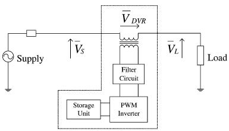
In this application, the three-phase inverter has a higher rated voltage, requiring three single phase transformers to safely connect it to the grid. The transformation ratio of the transformers depends on the three-phase inverter output voltage and the voltage level in the grid. Connecting transformers in open-/star-winding allows the injection of positive, negative, and zero sequence voltage, whereas connecting transformers into open-/delta-winding only allows for injecting positive and negative sequence voltage into the grid. The control technique for the DVR depends on the load type: some loads are sensitive only to magnitude change while others are sensitive both to magnitude change and phase shift. The featured model uses pre-sag compensation as a means to control active and reactive power compensation when a fault occurs, in order to maintain load-side voltage and phase angle under potential fault conditions.
Model description
Figure 2 shows the electrical part of the model. On the left side of schematic, the grid is modelled by an ideal voltage source, an inductance, and a resistance for each phase. Grid parameters are set in the Model Initialization window.
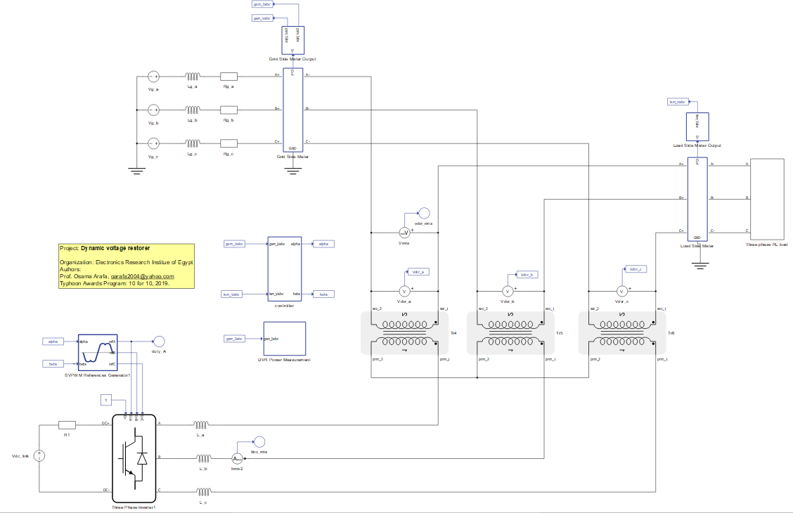
The three-phase inverter is connected in series to the grid through three single phase transformers, which in turn are connected to a DC source which modeled using an ideal voltage source and a resistor. The three phase RL load with grid connection appears on the far right of the schematic. Parameters for the three-phase load are also set in Model Initialization panel.
The control part of the model is represented by a blue color as shown in Figure 3. Both grid-side meters and load-side meters measure the voltage for the controller.
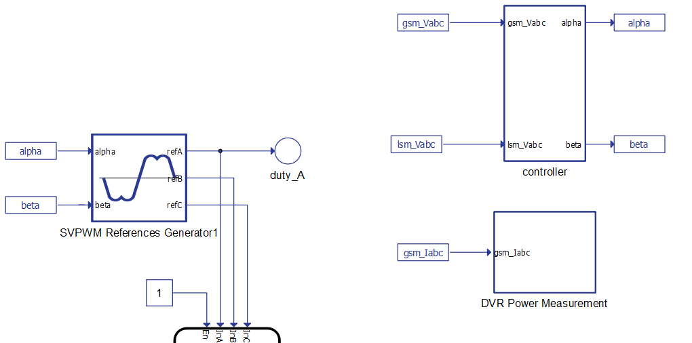
Figure 4 shows the controller sub-system block. The controller generates alpha and beta signals which feeds the Space Vector PWM reference generator, generating reference signals for the three-phase inverter.
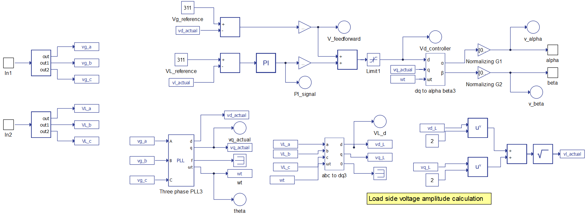
Active and reactive power measurement of the dynamic voltage restorer is done in the DVR power measurement block shown in Figure 5.
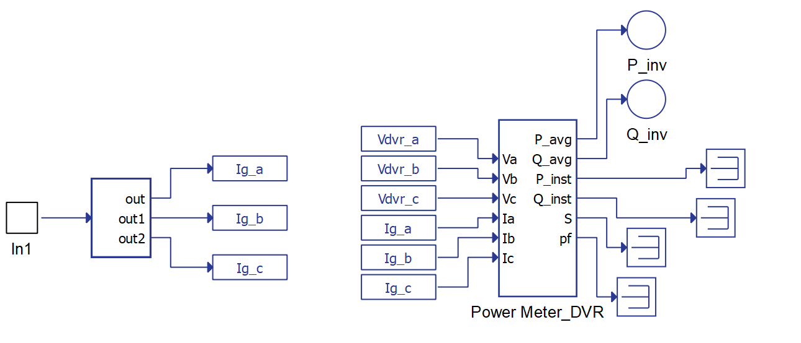
Simulation
This application comes with a pre-built SCADA panel shown in Figure 6. It offers the most essential user interface elements (widgets) to monitor and interact with the simulation in runtime, allowing you to further customize it freely.
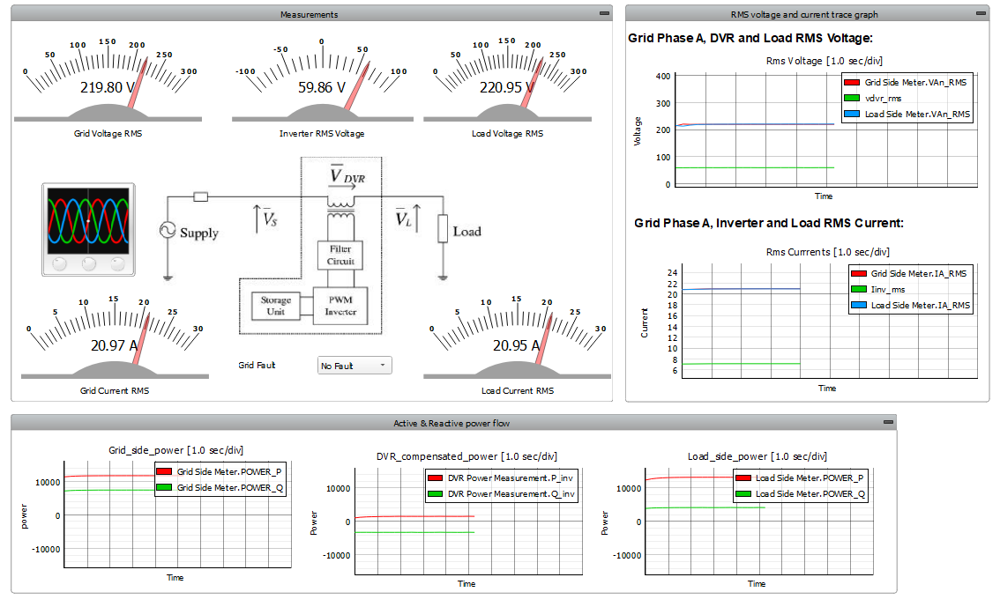
Here we consider three DVR application cases: normal operation mode without fault, operation during a voltage sag, and operation during a voltage swell.
- Normal operation mode without fault. During this operation mode, voltage in the grid
is at a nominal value of 230 V. Figure 7 shows the waveforms of injected DVR voltages during stand-by mode
operation. The DVR injects a small amount of active power into the grid, shown in Figure 8. The sum of drawn power
from the grid and injected power from the DVR equals the active power of the load.
Figure 7. Injected DVR voltages 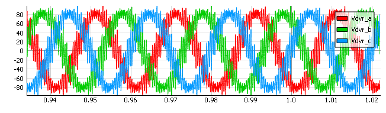
Figure 8. Active power measurement of the DVR 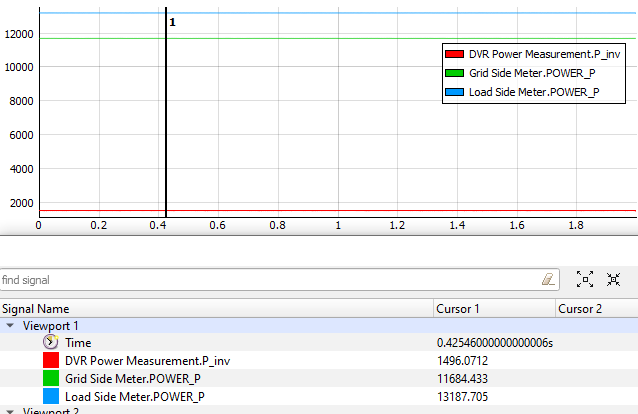
- Operation of the DVR during a voltage sag in the grid. Grid voltage is reduced from
230 V to 154 V. The top graph of Figure 9 shows the waveforms of injected voltage to the grid during fault
condition. The drop in grid voltage at 0 seconds shows the modeled fault, which is quickly
addressed by DVR voltage injection. The bottom graph of Figure 9 shows that load voltage stays
within limits, with a slight decrease in amplitude.
Figure 9. Injected DVR voltage during voltage dip 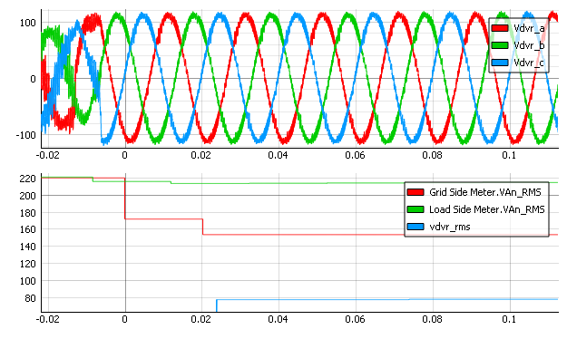
Figure 10 shows the active power response. The DVR compensates for the power decrease in the grid caused by the voltage drop, resulting in a slight decrease in the load-side active power during the transient period.
Figure 10. Active power response of the DVR during voltage dip 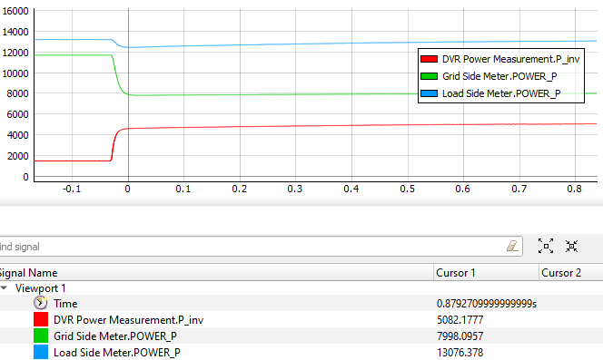
- Operation of the DVR during voltage swell. Grid voltage increases from 230 V to 268 V.
During this fault condition, the DVR takes voltage from the grid. The top graph of
Figure 11 shows the voltage
waveforms following the rise of the grid voltage 0s, representing the fault. The
bottom graph shows that the voltage stays within limits, with a slight increase in
amplitude.
Figure 11. DVR voltage waveforms during voltage swell 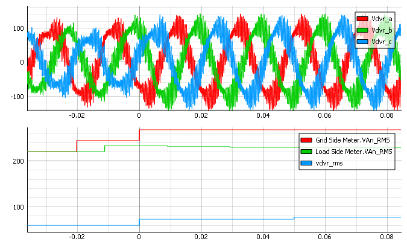
Figure 12 shows the active power response of the DVR to the voltage swell. The DVR reduces the power increase on the grid side by slightly increasing the active power on the load side during the fault period. The sum of power from the grid and drawn power of the DVR equals the active power of the load.
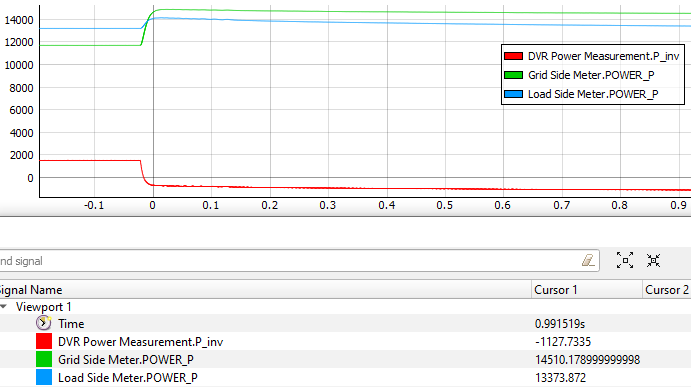
Test automation
We don’t have a test automation for this example yet. Let us know if you wish to contribute and we will gladly have you signed on the application note!
Example requirements
Table 1 provides detailed information about the file locations and hardware requirements for running the model in real-time, followed by the HIL device resource utilization when running the model using this minimal hardware configuration. This information is provided to help you with running and customizing the model as you see fit.
| Files | |
|---|---|
| Typhoon HIL files | examples\models\power quality\dynamic voltage restorer dynamic voltage restorer.tse dynamic voltage restorer.cus |
| Minimum hardware requirements | |
| No. of HIL devices | 1 |
| HIL device model | HIL101 |
| Device configuration | 1 |
| HIL device resource utilization | |
| No. of processing cores | 1 |
| Max. matrix memory utilization | 50.54% (core0) |
| Max. time slot utilization | 67.27% (core0) |
| Simulation step, electrical | 1 µs |
| Execution rate, signal processing | 100 µs |
References
Authors
[1] Kristian Monar